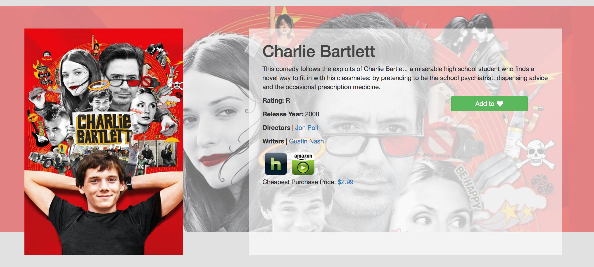
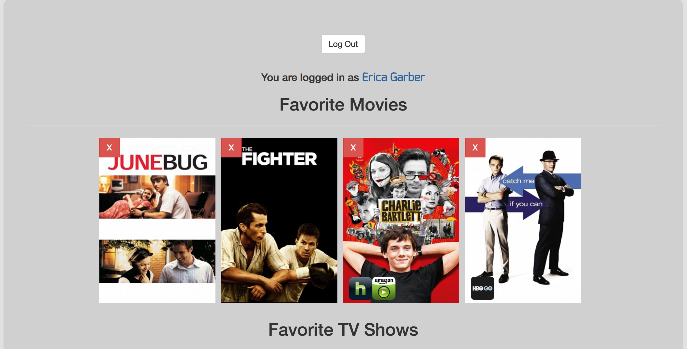

Stream Search was a group project I worked on for the JavaScript unit at Epicodus. I had three amazing group members who were all choosing to focus on the back-end (either Ruby or C#) when they weren't in JavaScript. That left me as the only front-ender and the design-eye for the project. A-OK with me!
If you are unfamiliar with Epicodus, at the end of each course there is a group project where students are given 4 or 5 days to tackle a project of their choosing. Since we had just learned AngularJS we decided to use it in conjunction with the GuideBox API and TMDB API to create a movie database search that would let you know where movies and TV shows are currently streaming.
First off we had to come up with our MVP (Minimum Viable Product). This was the absolute minimum we wanted to make sure was completed by the end of the week. It included:
We also came up with a variety of stretch goals for the project:
I also decided to come up with a mockup for how the User Interface would look. I did this in Photoshop and decided to keep it relatively simple and focus on the home page. Not knowing exactly what we were going to get back from the API calls we were making, I wanted to focus on the aesthetic rather than the nitty gritty details. At this point we hadn't come up with a name for our project and were calling it Blank & Chill
Initial site mockup created using Photoshop. At this point we were hoping that we would be able to show streaming data on the initial search query.Our first step was setting up the initial project structure with Angular and seeing what we could get from our APIs. Two of us had used the TMDB API on an earlier project and had a fairly good idea of what information it would return. It was chalk full of awesome posters and info about the movies, but it didn't include any streaming details.
This is where the GuidBox API came in to return streaming data the TMDB API didn't include. However, while the GuideBox API returned streaming data for specific queries, it didn't include this data on a broader search. For example, want to search all movies with "mission" in the title? No streaming data on that query. Want to query specifically "Mission Impossible: Ghost Protocol" - streaming data given. Ugh. We realized this would mean making potentially hundreds of API calls per search if we wanted to be able to display streaming data on an initial search.
As a result, we decided to start off by trying to hit our MVP goal of displaying streaming data only on the specific movie detail page. So while one pair worked toward setting up the initial search for movie functionality, the other pair worked on developing a home page interface that would allow you to initially see popular movies from the TMDB API.
Example of the popular movies we were able to return from the TMDB movie database. We eventually added functionality so that each of these movies could be clicked on to take you to their movie detail page.Now that you were able to search for a movie based on a word in its title we set up an separate API call to allow users to click on a specific movie and view the movie details through GuideBox. Again, we used GuideBox for this rather than TMDB simply so we could show where it was streaming.
Example of movie detail page with streaming information - Netfix for this example. Cheapest purchase price was something we found our API returned and added on later, as well as click functionality for writers and directors.Soon after getting the movie detail pages working we realized we had a problem. We wanted to be able to show photos of the top actors and actresses for each movie, but the GuideBox API didn't return photos only a list of names and the characters they played. So we brought the TMDB API back in to fetch the list of the first five actors returned from the GuideBox list. This wasn't the way we would have preferred to do this, but it was an effective work around.
Actor details for each movie with pictures of top actors and links to the rest of the cast. Each actor can then be searched independently from the movie detail page.The next major step was being able to query for People and TV shows. One major hurdle in this step was realizing that often times actors have been writers, producers, and directors and vise versa. To handle this, we created a way to search each person by name and then display their movies/shows based on their role as actor, director, writer, or producer. By defualt the search displays all of their work unsorted.
Example of the person detail page for Barbra Streisand. You can see that she has been and actor, director, writer, and producer. Clicking on any of those options will display her work in that role.Searching for TV shows was very similar to setting up the search and detail display for movies. Except for one crucial piece - GuideBox didn't return streaming data for TV shows. Instead it showed what network the show was aired on. This was probably one of the most frustrating aspects of the project since 1) we fully expected GuideBox to be able to do this, and 2) it was the reason we had chosen their API in the first place.
With limited time left to complete the project we substituted network info for streaming details and kept the layout very similar to the layout on the movie details pages.
Top: Example results of a tv show search for the word "breaking". Bottom: Example of a movie detail page. You can see that the network is substituted for the streaming info.User login was a major element that we wanted to be functional by presentation day. We had just found out we were going to have one less day to work on this project - thanks snow - and so it was time to get the user login underway. Lucky for us Firebase has Google User Authentication built in and it was just a matter of getting it set up. The hardest part of this step was testing to verify that it was actually working and then setting up Firebase storage tied to each user.
  Top: Stream Search login with Google Account. Once you are logged in you are able to see a list of your favorite movies and favorite tv shows from the user account page. Middle: Example of favoriting from movie detail page. Once favorite is button is clicked the button switches to a red "remove from favorites" button. Bottom: View of the User Account page with favorited movies and tv shows. Users can also remove a movie or show from favorites on this page and see where the movie is streaming. Clicking on the streaming link will take you directly to that movie on your account.As mentioned earlier we weren't able to show where each movie was streaming on the initial search due to limits on our GuideBox API so we thought up a new solution. We would allow the user to search for movies only streaming on Netflix, Hulu, etc. since that WAS something GuideBox could do. Great solution right?
After a day of working on this feature it was up and running, however, it ended up still needing to make a bunch of API calls to work correctly because GuideBox couldn't actually do this as seemlessly as it had advertised. That in combination with all the testing we had been doing was getting us dangerously close to our API call limit with GuideBox for the month. On Wednesday afternoon we noticed that we were starting to throw multiple errors on searches - GuideBox had started blocking our API calls.
Show day was the following afternoon so we backed off testing our search functionality and worked more on the UI. We took the current API keys out of the project and threw some fresh ones in for the demo. It didn't solve all the issues we were having, but it gave us a showable final product.
View of Stream Search with search bar and final logo. User Account info is located in the upper right hand corner. If no user is logged in it reads "Sign Up".Using a free API can be incredibly challenging. We especially had issues with the GuideBox API documentation promising to do things it couldn't. It was a great learning experience and a huge project to take on in under a week. I'm sure there are several components that could be fixed, debugged, and refactored. However with our MVP goal in mind, I think we rocked it. I feel very lucky I was able to work with such an awesome team on this project. You can find their GitHub profiles here:
The site is being hosted through Firebase under its old name of blank-and-chill.firebaseapp.com
Or checkout the GitHub Repo